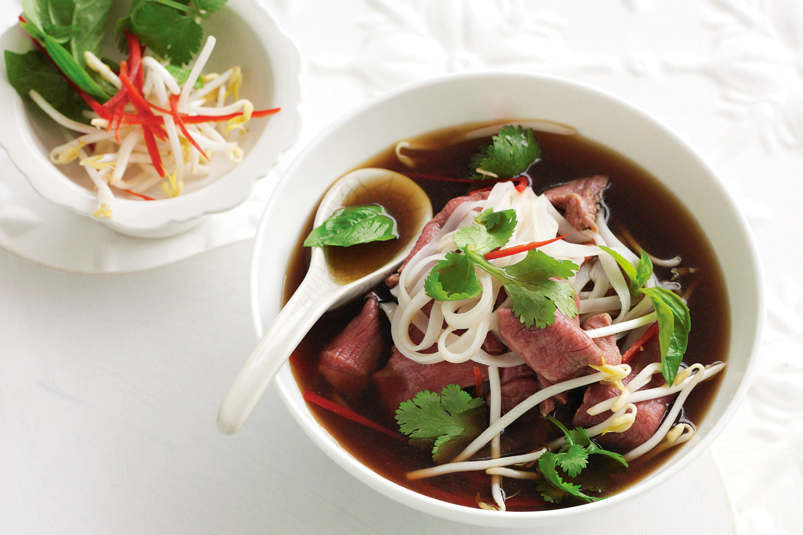
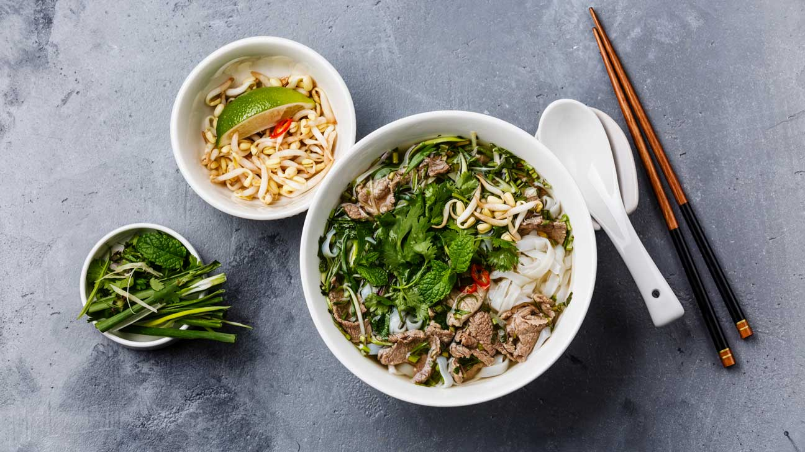
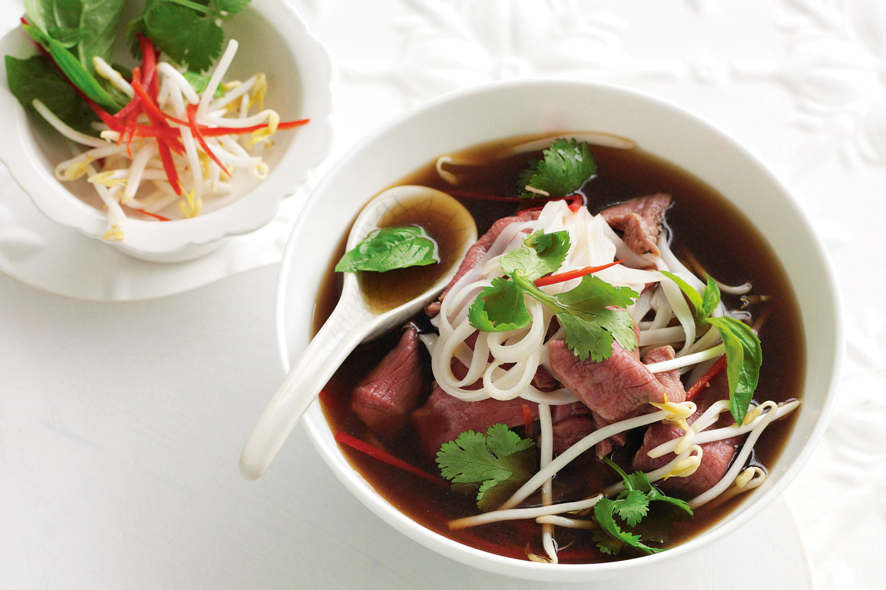
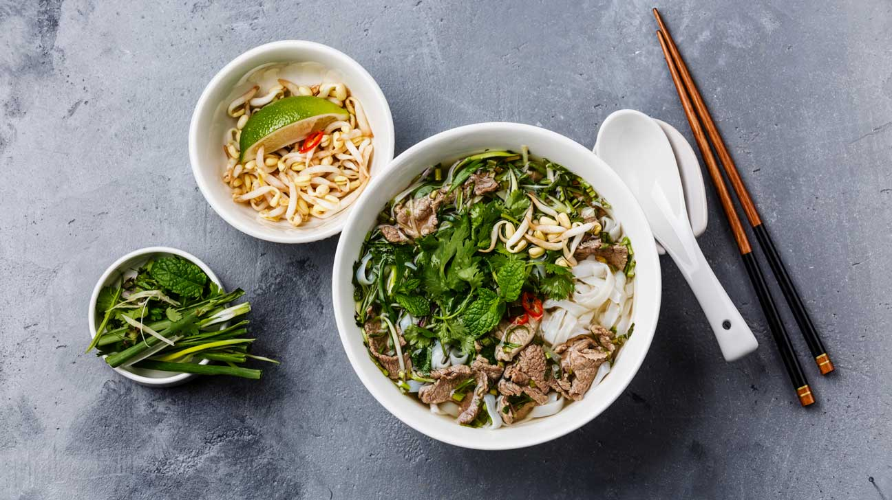

Phở là một món ăn truyền thống của Việt Nam và được xem là một trong những món ăn tiêu biểu cho nền ẩm thực Việt Nam.
Thành phần chính của phở là bánh phở và nước dùng cùng với thịt bò hoặc thịt gà cắt lát mỏng. Thịt bò thích hợp nhất để nấu phở là thịt, xương từ các giống bò ta (bò nội, bò vàng). Ngoài ra còn kèm theo các gia vị như: tương, tiêu, chanh, nước mắm, ớt, ...vv. Những gia vị này được thêm vào tùy theo khẩu vị của người dùng. Phở thông thường được dùng để làm món điểm tâm buổi sáng hoặc lót dạ buổi đêm, nhưng ở các thành phố lớn, món ăn này có thể được thưởng thức cả ngày. Tại các tỉnh phía nam Việt Nam và một số vùng miền khác, phở được bày kèm với đĩa rau thơm như hành, giá và những lá cây rau mùi, rau húng, trong đó ngò gai là loại lá đặc trưng của phở; tuy nhiên tại Hà Nội thông thường sẽ không có đĩa rau sống này. Phở thường là phở bò hay phở gà, nhưng đôi khi cũng có những biến thể khác, đặc biệt là phở sốt vang, phở khô, phở xào, phở chua, phở vịt ở Cao Bằng, và phở thịt quay ở các tỉnh miền núi phía Bắc.
Nước dùng cho nồi phở thường là nước dùng trong được ninh từ xương bò (hoặc xương lợn), kèm theo nhiều loại gia vị bao gồm quế, hồi, gừng nướng, thảo quả, sá sùng, đinh hương, hạt mùi, hành khô nướng. Thịt dùng cho món phở là thịt bò (với đủ loại thịt bắp, nạm, gầu được làm tái, hay chín hẳn) hoặc thịt gà (gà ta già luộc, xé thịt cho thịt ngọt đậm đà). "Bánh phở" theo truyền thống được làm từ bột gạo, tráng thành tấm mỏng rồi cắt thành sợi. Phở luôn được thưởng thức khi còn nóng hổi. Theo đó, để có một bát phở ngon và đậm vị, điều này còn phụ thuộc rất nhiều vào kĩ năng của người nấu, trong đó quan trọng nhất đó chính là nồi nước dùng.
 



Phở như ngày nay được cho là đã ra đời và định hình vào những năm đầu thế kỷ 20. Hà Nội hay Nam Định là địa phương thường được cho là xuất xứ của phở. Ở Nam Định, phở có nguồn gốc từ làng Vân Cù (xã Đồng Sơn, Nam Trực), nổi tiếng với dòng họ Cồ đã mang nghề nấu phở gia truyền đi khắp mọi nơi sinh cơ lập nghiệp. Món phở được tin là bắt đầu phổ biến trong bối cảnh hình thành Nhà máy dệt Nam Định. Phở cũng xuất hiện ở Hà Nội từ những năm đầu thế kỷ 20, đây cũng được biết đến là nơi đã làm cho món ăn này trở nên nổi tiếng. Tuy nhiên một số nhà văn, nhà thơ và nhà sử học đều nghiên cứu và thống nhất cho rằng phở xuất hiện đầu tiên tại Ô Quan Chưởng - Hà Nội bởi thời gian Pháp thuộc địa, Ô Quan Chưởng là nơi tập kết xương bò bỏ đi không dùng tới, người dân đã dùng để ninh và tạo nên món phở từ đó.
Trong món phở, công đoạn chế biến nước dùng (hay còn gọi là nước lèo) là công đoạn quan trọng nhất.
Nước dùng của phở truyền thống là phải được ninh từ xương ống của bò cùng với một số gia vị. Xương phải được rửa sạch, cạo sạch hết thịt bám vào xương cho vào nồi đun với nước lạnh. Nước luộc xương lần đầu phải đổ đi để nước dùng khỏi bị nhiễm mùi hôi của xương bò, nước luộc lần sau mới dùng làm nước lèo. Gừng và củ hành đã nướng đồng thời cũng được cho vào. Lửa đun được bật lớn để nước sôi lên, khi nước đã sôi thì phải giảm bớt lửa và bắt đầu vớt bọt. Khi đã vớt hết bọt, cho thêm một ít nước lạnh và lại đợi nước tiếp tục sôi tiếp để vớt bọt... Cứ làm như vậy liên tục cho đến khi nước trong và không còn cặn trong bọt nữa. Sau đó, cho một ít gia vị vào và điều chỉnh độ lửa sao cho nồi nước chỉ sôi lăn tăn để giữ cho nước khỏi bị đục và chất ngọt từ xương có đủ thời gian để tan vào nước lèo. Hương vị thơm ngon của nước dùng chủ yếu do các loại gia vị quyết định.
Tuy nhiên, công thức của từng loại nước dùng cụ thể cho từng hiệu phở được giữ khá bí mật. Mặc dù vậy, có thể nhận thấy các loại gia vị này bao gồm thảo quả, gừng, hoa hồi, đinh hương, hạt ngò gai, quế thanh, hành khô, tôm nõn và theo truyền thống thì không thể thiếu đuôi bò.
Nguyên thủy, để tăng vị ngọt rất giàu amino acid của nước phở, theo truyền thống, khi chưa có bột ngọt (mì chính), người xưa dùng tôm he. Cách nấu nước dùng ngày nay đã có những sự khác biệt tùy địa phương, như miền Bắc thường dùng nhiều mì chính (nhất là trong thời bao cấp, có cả phở "không người lái" - không thịt), còn miền Nam nhiều nơi nấu nước dùng bằng xương gà và thêm khô mực.

Ở Hà Nội, phở là một món ăn đặc biệt. Phở được dùng riêng như là một món ăn sáng, trưa hoặc tối. Nước dùng của phở được làm từ nước ninh của xương bò: xương cục, xương ống và xương vè. Thịt dùng cho món phở có thể là bò, hoặc gà. Bánh phở phải mỏng và dai mềm, gia vị của phở là hành lá, hạt tiêu, giấm ớt, lát chanh thái.
Từ thời Pháp thuộc, phở Hà Nội xuất hiện đầu tiên dưới hình thức "phở gánh". Đó là những người bán phở dạo. Trên đôi quang gánh của họ, một bên là thùng hàng tự chế có đủ nguyên liệu để chế biến món phở và bát, đĩa, đũa, thìa; bên kia là nồi nước dùng đặt trên một bếp than. Trước năm 1980, những gánh phở như vậy đã đi khắp các hàng cùng ngõ hẻm của Hà Nội với những tiếng rao quen thuộc của văn hóa ẩm thực về đêm của Hà Thành. Ngày nay, khi xã hội phát triển, quán ăn nhiều lên thì "phở gánh" ngày càng ít xuất hiện. Trong số đó có Phở bưng Hàng Trống là vẫn còn nổi tiếng.
Từ giữa những năm 1960 đến trước những năm 1990 của thế kỷ 20, vì nhiều lý do nhất là khâu quản lý hành chính bao cấp về lương thực, thực phẩm, tại Hà Nội và nhiều tỉnh miền Bắc xuất hiện "phở không người lái" (loại phở chỉ chan nước dùng, không có thịt) trong các cửa hàng mậu dịch quốc doanh. Chất lượng phở quốc doanh ở các cửa hàng này hoàn toàn tùy thuộc vào tay nghề hạn chế của các nhân viên không chuyên nhưng có rất nhiều sáng kiến. Họ biến tấu các loại gia vị, cách nấu nước dùng theo những gì họ có, họ kiếm được trong hoàn cảnh thời chiến thiếu thốn đủ thứ. Một "sáng kiến" của thời kỳ này là phở "không người lái" ăn với bánh mì hoặc cơm nguội.
Cũng từ thời bao cấp, ở Hà Nội, người ta thường có thói quen cho thêm nhiều mì chính vào nước dùng. Phở Hà Nội cũng được ăn kèm với những miếng quẩy nhỏ, nhưng đã mất đi trong thập kỷ 60 tới giữa thập kỷ 80 khi giai đoạn khó khăn. Cùng với thời đổi mới từ thập niên 90, phở đã phong phú hơn và quẩy đã trở lại trong bát phở Hà Nội.
Hàng phở đầu tiên của người Việt ở Hà Nội từ hàng gánh chuyển sang bán trong cửa hàng được cho là Phở Cát Tường (phố Cầu Gỗ) từ đầu thế kỉ XX. Ở Hà Nội ngày nay có nhiều cửa hàng phở nổi tiếng đã lưu truyền qua hai đến ba thế hệ. Các thương hiệu phở gia truyền nổi tiếng được nhiều người biết đến có thể kể như: Phở Bát Đàn, Phở mặn Gầm Cầu, Phở Sướng, Phở Vui, Phở Nhớ, phở Thìn Bờ Hồ, phở Thìn Lò Đúc. Nhiều hàng phở treo biển "Phở gia truyền Nam Định", đặc biệt với những người thuộc dòng họ Cồ cũng góp phần không nhỏ vào danh sách các hàng phở nổi tiếng ở Hà Nội như Phở Cụ Chiêu - Hàng Đồng, Phở Cồ Thưởng - Thái Thịnh, Phở Cồ Cử - Thụy Khuê. Quán phở Nam Định ở Hà Nội thường tương đối rộng rãi, bán đủ các biến thể phở bò (phở nước, phở xào, phở trộn, phở tái lăn), lại thêm cơm rang, mì xào.
Phở bò Nam Định là một món ăn phổ biến của Nam Định, phở Nam Định cũng có những đặc điểm chung như phở của các vùng khác là gồm bánh phở, nước phở, thịt bò hoặc thịt gà, và một số gia vị kèm theo, nhưng lại mang cái khác toàn diện mà khó có thể nhầm lẫn được. Bánh phở Nam Định là loại đặc biệt có sợi nhỏ ngon và mềm, khác với sợi bánh của vùng khác. Thịt bò được thái mỏng đập dập, nhúng và vớt trong khoảng thời gian phù hợp nên ăn mềm mà vẫn giữ được độ tươi ngon và dinh dưỡng của thịt... Và nếu nói đến nước thì thường mang tính "gia truyền". Những người thợ làm phở thường giấu kín bí quyết pha chế nước phở của mình và chỉ truyền cho thế hệ sau trong gia đình mà thôi.
Phở gia truyền ở Nam Định chủ yếu có nguồn gốc từ Hoa kiều ở làng Giao Cù và từ họ Cồ ở làng Vân Cù, xã Đồng Sơn, (huyện Nam Trực). Sau đó được truyền ra các làng bên cạnh nhưng đã được biến chế, không còn mang nét nguyên vẹn như xưa và thêm một số phụ gia. Vào thập niên 50, người Nam Định đã mang món phở ra Hà Nội và bán theo xe đẩy. Từ giữa những năm 60 đến trước những năm 90 của thế kỷ 20, vì nhiều lý do nhất là khâu quản lý hành chính bao cấp về lương thực, thực phẩm, phở Nam Định vắng bóng ở những địa phương khác, nhưng từ năm 90 trở lại đây, Phở Nam Định phục hồi trở lại và ngày càng phát triển mạnh. Hiện nay dân làng thuộc làng Vân Cù, Giao Cù và các làng lân cận đi khắp nơi từ Bắc vào Nam mở các quán phở đế kiếm kế sinh nhai và gìn giữ một món ăn ngon người Việt.
Phở Tái Lăn Truyền Thống
Phở chín: Nạm/ Gầu
Phở Đặc Biệt